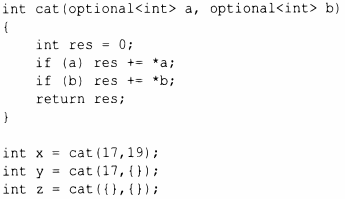

optional<A> можно рассматривать как частный случай variant (наподобие variant<A, nothing>) или как обобщение идеи о том, что А* либо указывает на объект, либо имеет значение nullptr.
optional может быть полезным для функций, которые могут как возвращать объект, так и не возвращать его:
При этом можно написать
Это нравится некоторым программистам, которые недолюбливают исключения (см. § 3.5.5). Обратите внимание на любопытное использование *. optional рассматривается как указатель на свой объект, а не как сам объект.
optional, являющийся эквивалентом nullptr, - пустой объект{} . Например:
При попытке обратиться к optional, в котором не хранится значение, результат является неопределенным; исключение при этом не генерируется. Таким образом, optional не гарантирует безопасность с точки зрения типов.